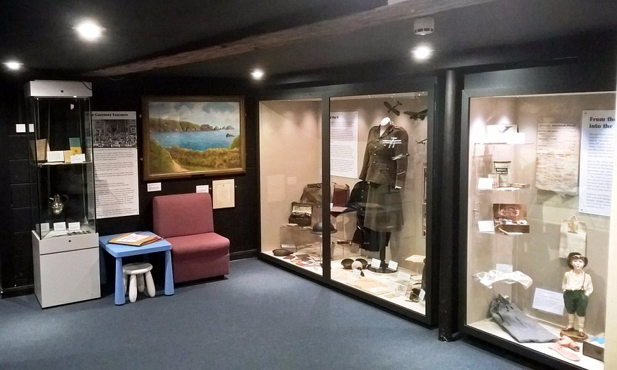

The Hat Works
its hats man, i don't know what to tell you
its interesting, but like, it really is just lots of hats
Find out more...Stockport Museum
stockport history
theres a room with kids games, and whenever i go i always end up playing snakes and ladders with whoever im with for longer than i actually spend in the rest of the museum
Find out more... The Staircase House
very cool, very oldey worldey
crazy that it's just packed hidden away
Find out more...War Memorial Art Gallery
very cool building
depends on what exhibition is going on when you go in as to the quality tbh
Find out more...Robinsons Brewery
never been
does look a bit like willy wonkas chocolate factory though, but for booze
Find out more...Theatres and Venues
Plaza, Garrick, Guildhall
i say garrick very good, plaza kind of shit
Find out more...